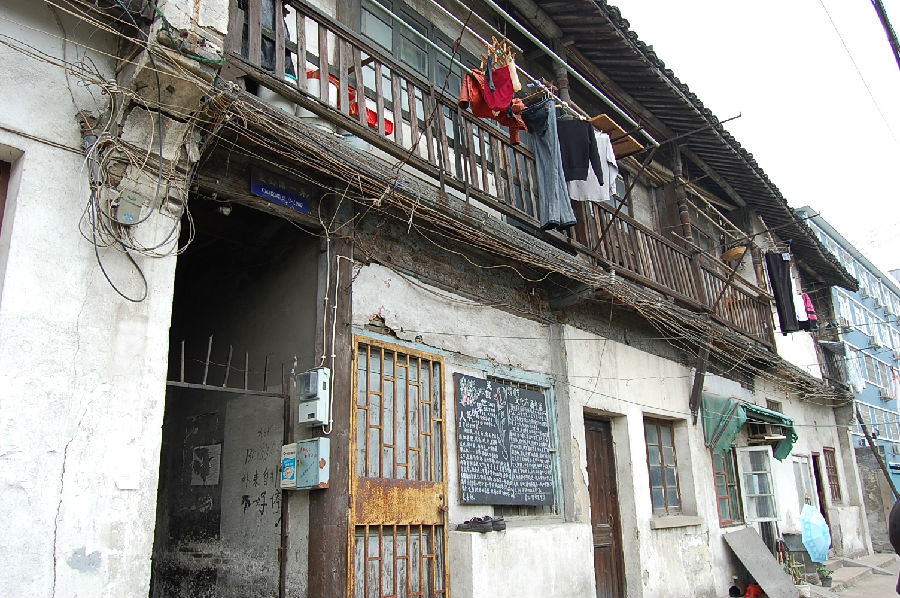

嘉兴市文物保护网 · 市级文物保护点 · 2020-11-09 · 原文

宣公弄3～7号民宅位于嘉兴市南湖区解放街道虹桥社区宣公弄3～7号，据当地居民介绍，为20世纪30年代所建，后被日本人强占，并把原来的门窗改造为移门、移窗，也改动了房屋的天花板，一楼作为马房，二楼用来居住。建筑坐北朝南，砖木结构，系一进二层五开间楼房，占地面积210平方米，通面阔16.77米，通进深12.52米，檐高6.34米。朝南设有阳台，房屋梁枋上有花草纹饰。此宅以中国传统建筑风格为基础，门窗及内饰上融合了日本人的居住习惯和喜好，是日军侵华的见证，对于研究嘉兴抗战史有较高的历史价值。2009年公布为嘉兴市文物保护点。